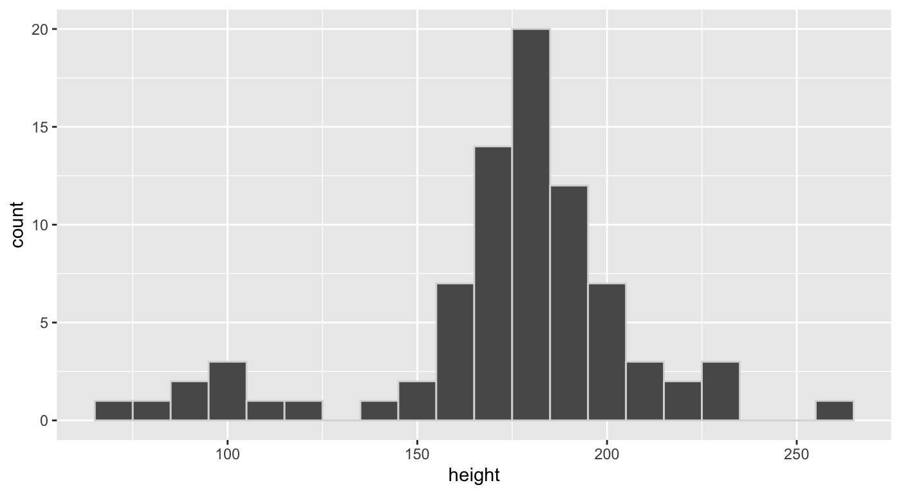
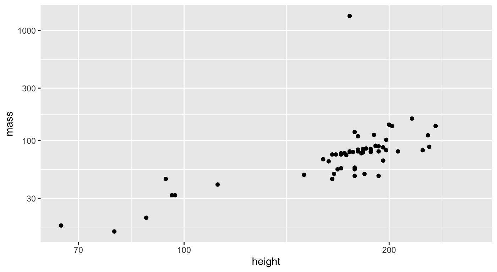
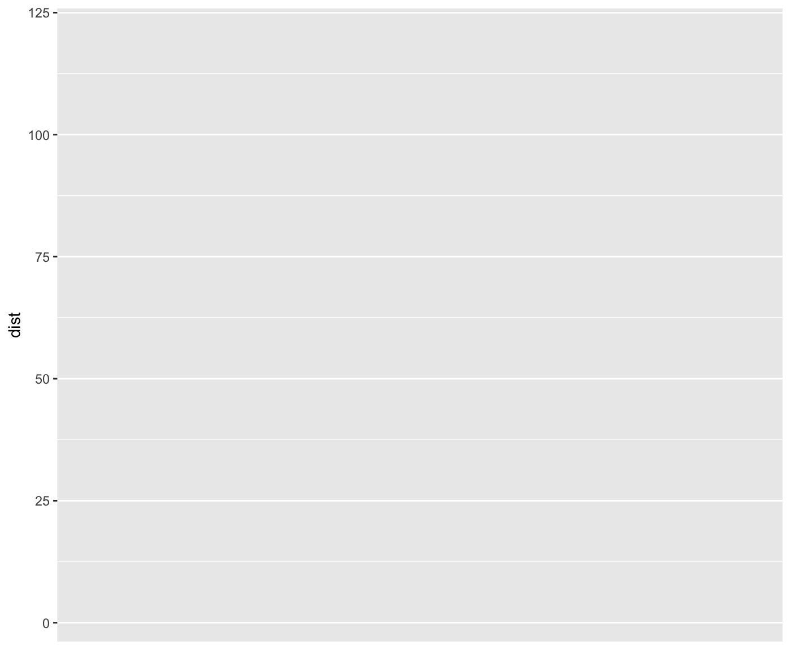
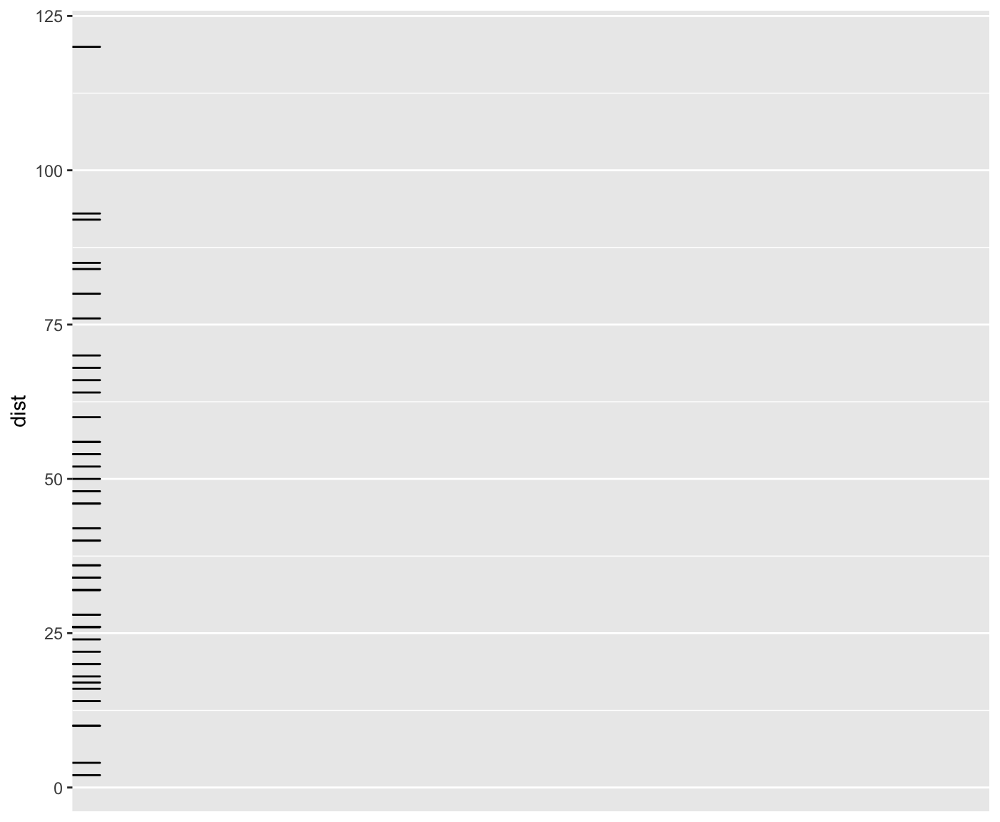
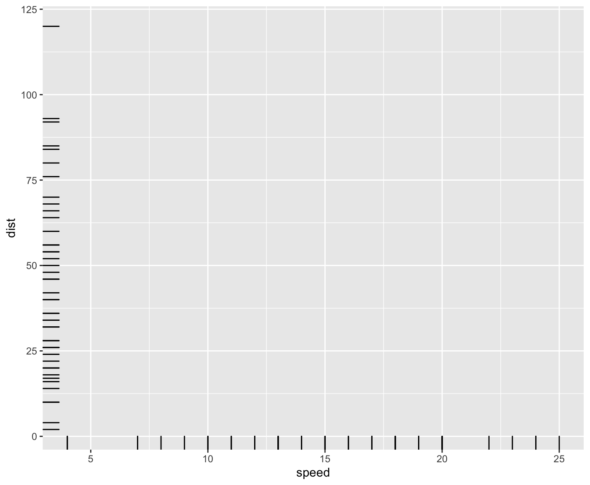
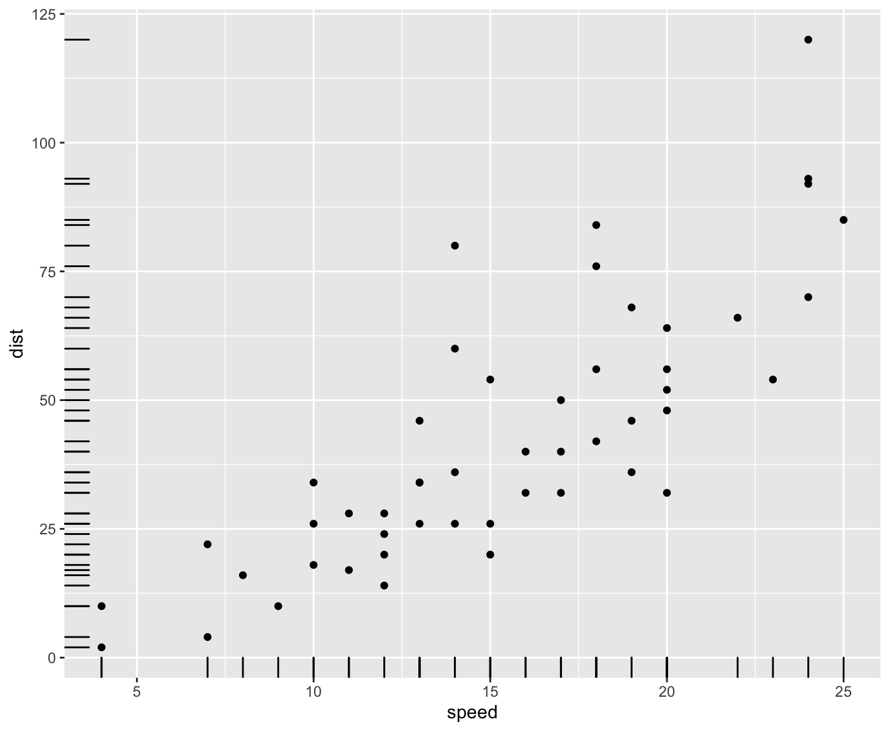
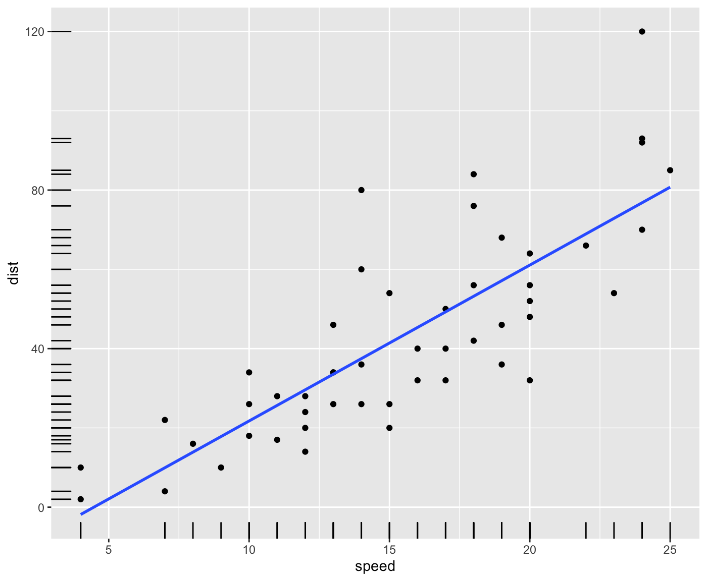
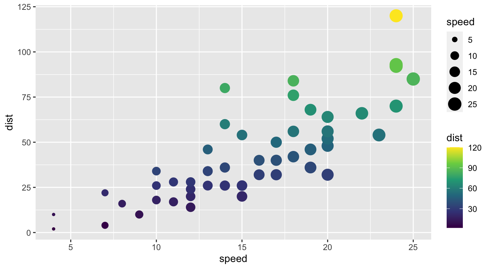
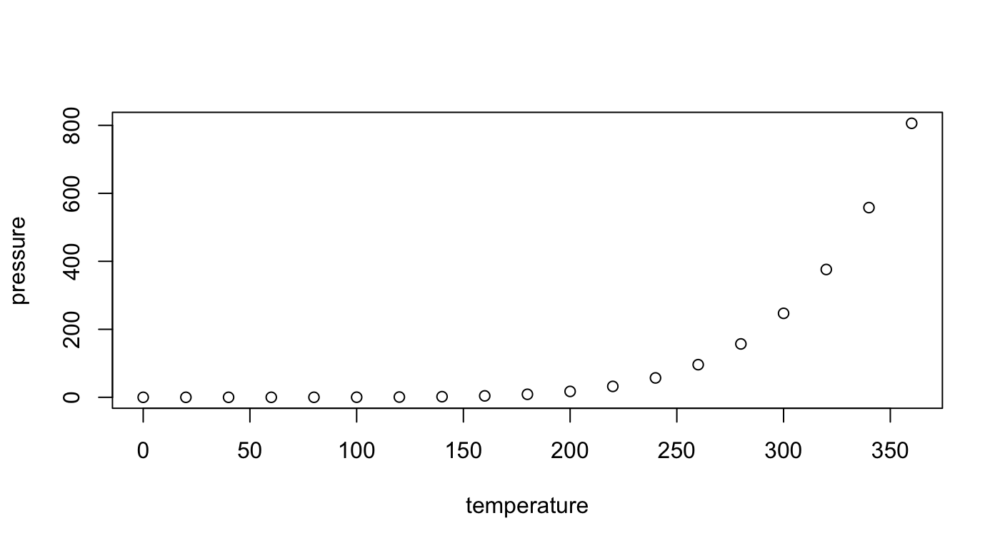

Introducing Double Crochet
Featuring a few of my favorite things
cool_xaringan_stuff_double_crochet.Rmd| class: inverse |
| ###From source .Rmd: |
| ``` |
title: “Introducing Double Crochet” author: “Featuring a few of my favorite things” output: xaringan::moon_reader: lib_dir: libs css: [default, “custom.css”] nature: ratio: 16:9 highlightStyle: github highlightLines: true countIncrementalSlides: false ```
| class: inverse |
| ###From source .Rmd: |
| ```` |
{r setup, include=FALSE} knitr::opts_chunk$set(echo = TRUE, message = F, warning = F, comment = "", fig.height = 4, cache = T) library(tidyverse) library(flipbookr) options(knitr.duplicate.label = "allow") xaringanExtra::use_share_again()
# Hi!
{css style, eval = TRUE, echo = FALSE} .remark-code{line-height: 1.5; font-size: 120%}
{css style2, eval = TRUE, echo = FALSE} .left-code { color: #777; width: 38%; height: 92%; float: left; } .right-plot { width: 60%; float: right; padding-left: 1%; } ```` —
Hi!
| class: inverse |
| ###From source .Rmd: |
| ``` |
| # Hello. |
|---|
| How are you? |
Good?
| ## Hope so! |
| ``` |
How are you?
Good?
| ## Hope so! |
class: inverse
###From source .Rmd:
---
.pull-right[# Hello!].pull-right[# Hello!]
| class: inverse |
| ###From source .Rmd: |
| ```` |
{r example-plot} ggplot(starwars) + aes(x = height) + geom_histogram( #<< binwidth = 10, #<< color = "grey85" #<< ) #<< ```` —
ggplot(starwars) +
aes(x = height) +
geom_histogram( #<<
binwidth = 10, #<<
color = "grey85" #<<
) #<<
| class: inverse |
| ###From source .Rmd: |
| ```` |
.left-code[ {r again} ggplot(starwars) + aes(x = height) + aes(y = mass) + geom_point() + scale_x_log10() + #<< scale_y_log10() #<< ]
.right-plot[ {r plot-label-out, ref.label="plot-label", echo=FALSE} ] ```` —
.left-code[
ggplot(starwars) +
aes(x = height) +
aes(y = mass) +
geom_point() +
scale_x_log10() + #<<
scale_y_log10() #<< ]
.right-plot[]
| class: inverse |
| ###From source .Rmd: |
| ``` |
class: inverse, center, middle background-image: url(https://images.unsplash.com/photo-1522210667936-c3402f6742c3?ixid=MXwxMjA3fDB8MHxwaG90by1wYWdlfHx8fGVufDB8fHw%3D&ixlib=rb-1.2.1&auto=format&fit=crop&w=1402&q=80) background-size: contain
# {flipbookr} ``` — class: inverse, center, middle background-image: url(https://images.unsplash.com/photo-1522210667936-c3402f6742c3?ixid=MXwxMjA3fDB8MHxwaG90by1wYWdlfHx8fGVufDB8fHw%3D&ixlib=rb-1.2.1&auto=format&fit=crop&w=1402&q=80) background-size: contain
{flipbookr}
| class: inverse |
| ###From source .Rmd: |
| ```` |
r chunk_reveal("explain_dist", chunk_options = "fig.height = 6")
{r explain_dist, include=F} cars %>% ggplot() + aes(y = dist) + geom_rug() + aes(x = speed) + geom_point() + geom_smooth(method = "lm", se = F) ```` —
count: false
.panel1-explain_dist-auto[
cars #<<]
.panel2-explain_dist-auto[
speed dist
1 4 2
2 4 10
3 7 4
4 7 22
5 8 16
6 9 10
7 10 18
8 10 26
9 10 34
10 11 17
11 11 28
12 12 14
13 12 20
14 12 24
15 12 28
16 13 26
17 13 34
18 13 34
19 13 46
20 14 26
21 14 36
22 14 60
23 14 80
24 15 20
25 15 26
26 15 54
27 16 32
28 16 40
29 17 32
30 17 40
31 17 50
32 18 42
33 18 56
34 18 76
35 18 84
36 19 36
37 19 46
38 19 68
39 20 32
40 20 48
41 20 52
42 20 56
43 20 64
44 22 66
45 23 54
46 24 70
47 24 92
48 24 93
49 24 120
50 25 85]
| count: false |
| .panel1-explain_dist-auto[ |
r cars %>% ggplot() #<< ] |
| .panel2-explain_dist-auto[ ] |
count: false
.panel1-explain_dist-auto[
cars %>%
ggplot() +
aes(y = dist) #<<]
.panel2-explain_dist-auto[ ]
| count: false |
| .panel1-explain_dist-auto[ |
r cars %>% ggplot() + aes(y = dist) + geom_rug() #<< ] |
| .panel2-explain_dist-auto[ ] |
count: false
.panel1-explain_dist-auto[
cars %>%
ggplot() +
aes(y = dist) +
geom_rug() +
aes(x = speed) #<<]
.panel2-explain_dist-auto[ ]
| count: false |
| .panel1-explain_dist-auto[ |
r cars %>% ggplot() + aes(y = dist) + geom_rug() + aes(x = speed) + geom_point() #<< ] |
| .panel2-explain_dist-auto[ ] |
count: false
.panel1-explain_dist-auto[
cars %>%
ggplot() +
aes(y = dist) +
geom_rug() +
aes(x = speed) +
geom_point() +
geom_smooth(method = "lm", #<<
se = F) #<<]
.panel2-explain_dist-auto[ ]
| class: inverse |
| ###From source .Rmd: |
| ``` |
class: inverse, middle, right background-image: url(https://images.unsplash.com/photo-1520999166456-6c498658829d?ixid=MXwxMjA3fDB8MHxwaG90by1wYWdlfHx8fGVufDB8fHw%3D&ixlib=rb-1.2.1&auto=format&fit=crop&w=1500&q=80) background-size: cover
# {flair} ``` — class: inverse, middle, right background-image: url(https://images.unsplash.com/photo-1520999166456-6c498658829d?ixid=MXwxMjA3fDB8MHxwaG90by1wYWdlfHx8fGVufDB8fHw%3D&ixlib=rb-1.2.1&auto=format&fit=crop&w=1500&q=80) background-size: cover
{flair}
| class: inverse |
| ###From source .Rmd: |
| ```` |
{r hey, echo = F} library(flair)
{r how_to_pipe, include = FALSE} iris %>% group_by(Species) %>% summarize(mean(Sepal.Length))
{r ho, echo = FALSE} decorate("how_to_pipe") %>% flair("%>%") ```` —
iris %>%
group_by(Species) %>%
summarize(mean(Sepal.Length))
# A tibble: 3 x 2
Species `mean(Sepal.Length)`
<fct> <dbl>
1 setosa 5.01
2 versicolor 5.94
3 virginica 6.59
| class: inverse |
| ###From source .Rmd: |
| ```` |
{r plot, include=F} ggplot(cars) + aes(x = speed) + aes(y = dist) + geom_point() + aes(size = speed) + aes(color = dist) + scale_color_viridis_c()
{r hum, fig.height=3, echo = F} decorate("plot") %>% flair_funs() ```` —
ggplot(cars) +
aes(x = speed) +
aes(y = dist) +
geom_point() +
aes(size = speed) +
aes(color = dist) +
scale_color_viridis_c()

| class: inverse |
| ###From source .Rmd: |
| ```` |
{r hee, include=F} decorate("plot") %>% flair_args(color = "steelblue") ```` —
| class: inverse |
| ###From source .Rmd: |
| ```` |
# aes() is “asking for representation”
{r ha, echo = F} decorate("plot") %>% flair_args(pattern = "aes") ```` —
aes() is “asking for representation”
ggplot(cars) +
aes(x = speed) +
aes(y = dist) +
geom_point() +
aes(size = speed) +
aes(color = dist) +
scale_color_viridis_c()

| class: inverse |
| ###From source .Rmd: |
| ``` |
class: inverse, center, middle background-image: url(https://images.unsplash.com/photo-1557428894-56bcc97113fe?ixid=MXwxMjA3fDB8MHxwaG90by1wYWdlfHx8fGVufDB8fHw%3D&ixlib=rb-1.2.1&auto=format&fit=crop&w=1576&q=80) background-size: contain
# {xaringanExtra} ``` — class: inverse, center, middle background-image: url(https://images.unsplash.com/photo-1557428894-56bcc97113fe?ixid=MXwxMjA3fDB8MHxwaG90by1wYWdlfHx8fGVufDB8fHw%3D&ixlib=rb-1.2.1&auto=format&fit=crop&w=1576&q=80) background-size: contain
{xaringanExtra}
| class: inverse |
| ###From source .Rmd: |
| ```` |
{r xaringan-editable, echo=FALSE} xaringanExtra::use_editable(expires = 1)
## .can-edit[You can edit this slide title]
### A few of my favorite things
.can-edit.key-likes[ - thing one - thing two ] ```` —
.can-edit[You can edit this slide title]
A few of my favorite things
.can-edit.key-likes[ - thing one - thing two]
| class: inverse |
| ###From source .Rmd: |
| ```` |
{r xaringan-tachyons, echo=FALSE} xaringanExtra::use_tachyons()
.bg-washed-green.b–dark-green.ba.bw2.br3.shadow-5.ph4.mt5[ Tachyons provides small, single-purpose CSS classes that are easily composed to achieve larger functionality and styles. In the remarkjs content classes syntax, you can compose classes by chaining them together. For example, the following markdown produces a box with a washed green background (.bg-washed-green) and a dark green border (.b–dark-green) on all sides (.ba) with line width 2 (.bw2) and border radius (.br3). The box has a shadow (.shadow-5) and medium-large horizontal padding (.ph4) with a large top margin (.mt5). .tr[ — Garrick Aden-Buie ]] ```` —
.bg-washed-green.b–dark-green.ba.bw2.br3.shadow-5.ph4.mt5[ Tachyons provides small, single-purpose CSS classes that are easily composed to achieve larger functionality and styles. In the remarkjs content classes syntax, you can compose classes by chaining them together. For example, the following markdown produces a box with a washed green background (.bg-washed-green) and a dark green border (.b–dark-green) on all sides (.ba) with line width 2 (.bw2) and border radius (.br3). The box has a shadow (.shadow-5) and medium-large horizontal padding (.ph4) with a large top margin (.mt5). .tr[ — Garrick Aden-Buie]]
| class: inverse |
| ###From source .Rmd: |
| ```` |
{r xaringan-panelset, echo=FALSE} xaringanExtra::use_panelset()
.panel[.panel-name[This is a Panel Set] Some things that hang together ]
.panelset[ .panel[.panel-name[R Code]
{r panel-chunk, fig.show='hide'} plot(pressure) ]
.panel[.panel-name[Plot]
{r panel-chunk2, echo = F} plot(pressure) ] ] ```` —
.panel[.panel-name[This is a Panel Set] Some things that hang together]
.panelset[ .panel[.panel-name[R Code]
plot(pressure)]
.panel[.panel-name[Plot]
 ] ]
| class: inverse |
| ###From source .Rmd: |
| ```` |
# Animation
{r xaringan-animate-css, echo=FALSE} xaringanExtra::use_animate_css() # xaringanExtra::use_animate_all("slide_left") ```` —
Animation
| class: inverse |
| ###From source .Rmd: |
| ``` |
class: animated slideInLeft fadeOutRight
## This slide…
- slides in from the left
- and fades out to the right on exit
---
class: animated slideInLeft fadeOutRight
## This slide...
- slides in from the left
- and fades out to the right on exit
---
class: inverse
###From source .Rmd:
| class: animated fadeInLeft rollOutRight inverse background-image: url(https://images.unsplash.com/photo-1467546706352-fa0391181b7c?ixid=MXwxMjA3fDB8MHxwaG90by1wYWdlfHx8fGVufDB8fHw%3D&ixlib=rb-1.2.1&auto=format&fit=crop&w=1050&q=80) background-size: cover |
| # Now watch this |
| - slides in from the left - and rolls out to the left on the Right ``` |
class: animated fadeInLeft rollOutRight inverse background-image: url(https://images.unsplash.com/photo-1467546706352-fa0391181b7c?ixid=MXwxMjA3fDB8MHxwaG90by1wYWdlfHx8fGVufDB8fHw%3D&ixlib=rb-1.2.1&auto=format&fit=crop&w=1050&q=80) background-size: cover